没有风雨躲得过~
原始截图优先 · OCR 仅辅助检索
原始 PDF 不公开，本页展示捕获页面的截图。 下方优先展示原始截图；自动识别文字默认收起，仅辅助检索与对照。OCR 由程序自动识别，尚未逐字核对，可能存在错字、漏字、漏行、顺序或断行错误。留言与作者回复仅限截图中可见的内容，不代表完整线上留言，也未据此推断留言总数。
OCR 识别提示（待核对）
- OCR/视觉转录文字，尚未逐字校对；可能错字、漏字、漏行，数字、姓名、表情、标点及断行也可能有误，请以截图为准。
- 这里只保留 PDF 已截到的正文、留言和作者回复；截图以外的留言不在此存档中。
- 未从截图推断留言总数或回复关系；手机界面文字也可能混入 OCR。
- 本次视觉转录不提供机器置信分数；无低置信标记不代表文字已经准确。
- 页面边界仅露出少量字形的重复行归到文字主体可见的相邻页；不推断缺失内容。
识别工具：OpenAI visual page transcription · 。识别器置信度仅用于提示核对，不是文字准确率。
第 1 页 · 原始截图
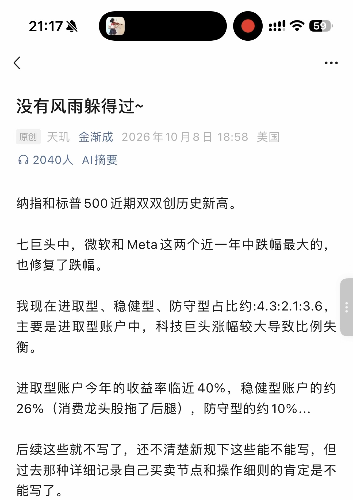
查看本页自动识别文字（OCR待核对）
以下为未经逐字核对的自动识别结果，请以上方原图为准。
21:17
59
没有风雨躲得过~
原创 天玑 金渐成 2026年10月8日 18:58 美国
2040人 AI摘要
纳指和标普500近期双双创历史新高。
七巨头中，微软和Meta这两个近一年中跌幅最大的，
也修复了跌幅。
我现在进取型、稳健型、防守型占比约:4.3:2.1:3.6，
主要是进取型账户中，科技巨头涨幅较大导致比例失
衡。
进取型账户今年的收益率临近40%，稳健型账户的约
26%（消费龙头股拖了后腿），防守型的约10%...
后续这些就不写了，还不清楚新规下这些能不能写，但
过去那种详细记录自己买卖节点和操作细则的肯定是不
能写了。
第 2 页 · 原始截图
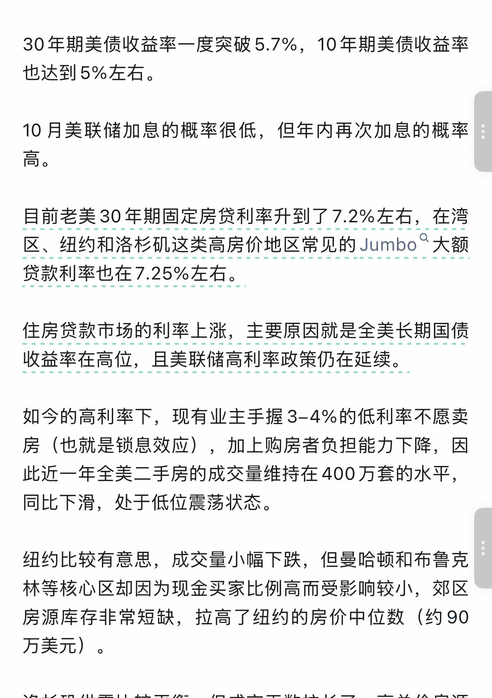
查看本页自动识别文字（OCR待核对）
以下为未经逐字核对的自动识别结果，请以上方原图为准。
30年期美债收益率一度突破5.7%，10年期美债收益率
也达到5%左右。
10月美联储加息的概率很低，但年内再次加息的概率
高。
目前老美30年期固定房贷利率升到了7.2%左右，在湾
区、纽约和洛杉矶这类高房价地区常见的Jumbo大额
贷款利率也在7.25%左右。
住房贷款市场的利率上涨，主要原因就是全美长期国债
收益率在高位，且美联储高利率政策仍在延续。
如今的高利率下，现有业主手握3–4%的低利率不愿卖
房（也就是锁息效应），加上购房者负担能力下降，因
此近一年全美二手房的成交量维持在400万套的水平，
同比下滑，处于低位震荡状态。
纽约比较有意思，成交量小幅下跌，但曼哈顿和布鲁克
林等核心区却因为现金买家比例高而受影响较小，郊区
房源库存非常短缺，拉高了纽约的房价中位数（约90
万美元）。
第 3 页 · 原始截图
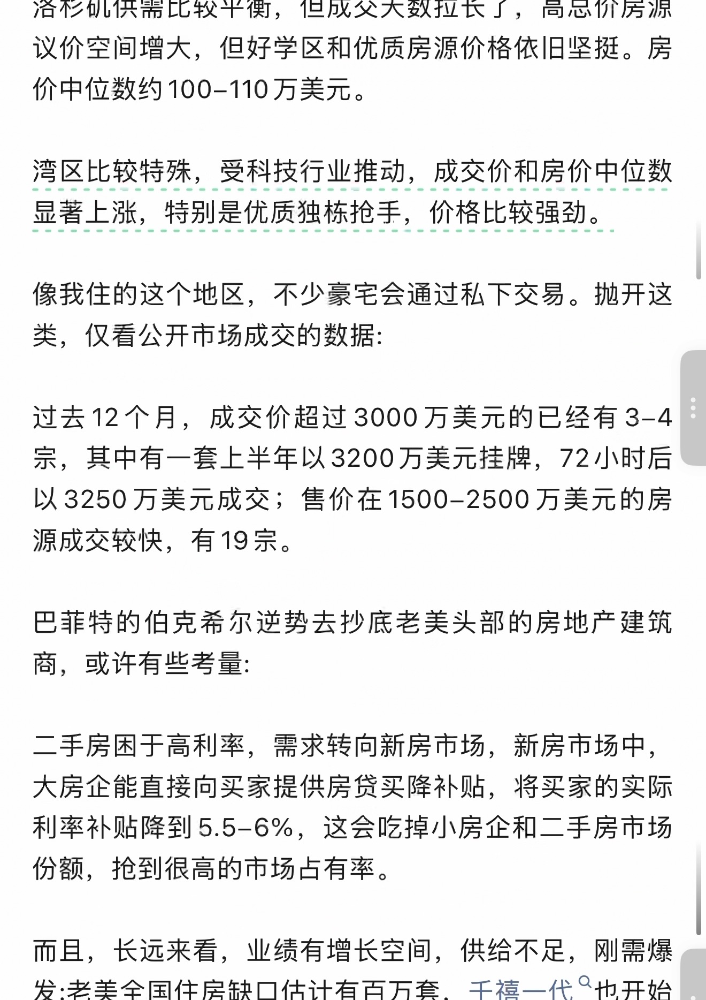
查看本页自动识别文字（OCR待核对）
以下为未经逐字核对的自动识别结果，请以上方原图为准。
洛杉矶供需比较平衡，但成交天数拉长了，高总价房源
议价空间增大，但好学区和优质房源价格依旧坚挺。房
价中位数约100–110万美元。
湾区比较特殊，受科技行业推动，成交价和房价中位数
显著上涨，特别是优质独栋抢手，价格比较强劲。
像我住的这个地区，不少豪宅会通过私下交易。抛开这
类，仅看公开市场成交的数据:
过去12个月，成交价超过3000万美元的已经有3–4
宗，其中有一套上半年以3200万美元挂牌，72小时后
以3250万美元成交；售价在1500–2500万美元的房
源成交较快，有19宗。
巴菲特的伯克希尔逆势去抄底老美头部的房地产建筑
商，或许有些考量:
二手房困于高利率，需求转向新房市场，新房市场中，
大房企能直接向买家提供房贷买降补贴，将买家的实际
利率补贴降到5.5–6%，这会吃掉小房企和二手房市场
份额，抢到很高的市场占有率。
而且，长远来看，业绩有增长空间，供给不足，刚需爆
发:老美全国住房缺口估计有百万套，千禧一代也开始
第 4 页 · 原始截图
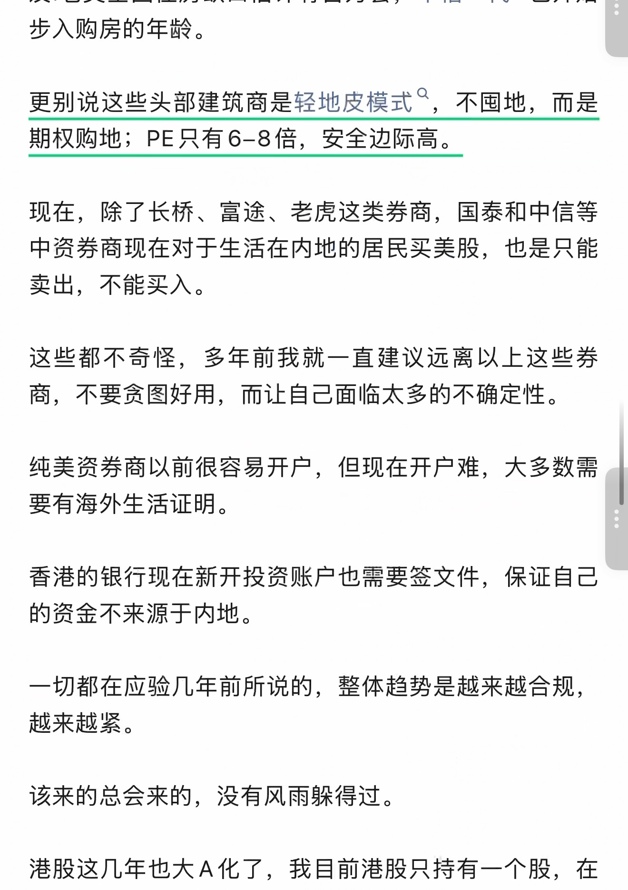
查看本页自动识别文字（OCR待核对）
以下为未经逐字核对的自动识别结果，请以上方原图为准。
步入购房的年龄。
更别说这些头部建筑商是轻地皮模式，不囤地，而是
期权购地；PE只有6–8倍，安全边际高。
现在，除了长桥、富途、老虎这类券商，国泰和中信等
中资券商现在对于生活在内地的居民买美股，也是只能
卖出，不能买入。
这些都不奇怪，多年前我就一直建议远离以上这些券
商，不要贪图好用，而让自己面临太多的不确定性。
纯美资券商以前很容易开户，但现在开户难，大多数需
要有海外生活证明。
香港的银行现在新开投资账户也需要签文件，保证自己
的资金不来源于内地。
一切都在应验几年前所说的，整体趋势是越来越合规，
越来越紧。
该来的总会来的，没有风雨躲得过。
港股这几年也大A化了，我目前港股只持有一个股，在
第 5 页 · 原始截图
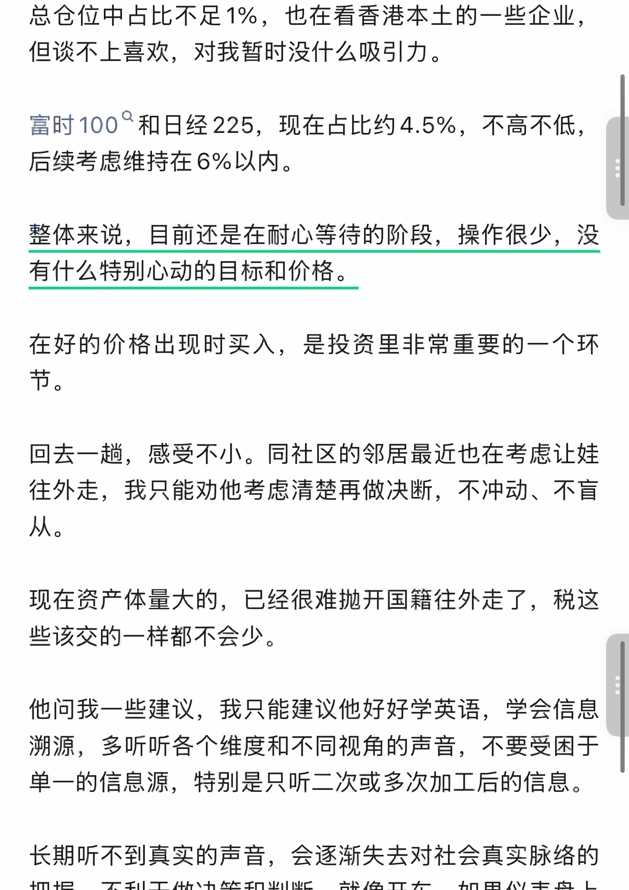
查看本页自动识别文字（OCR待核对）
以下为未经逐字核对的自动识别结果，请以上方原图为准。
总仓位中占比不足1%，也在看香港本土的一些企业，
但谈不上喜欢，对我暂时没什么吸引力。
富时100和日经225，现在占比约4.5%，不高不低，
后续考虑维持在6%以内。
整体来说，目前还是在耐心等待的阶段，操作很少，没
有什么特别心动的目标和价格。
在好的价格出现时买入，是投资里非常重要的一个环
节。
回去一趟，感受不小。同社区的邻居最近也在考虑让娃
往外走，我只能劝他考虑清楚再做决断，不冲动、不盲
从。
现在资产体量大的，已经很难抛开国籍往外走了，税这
些该交的一样都不会少。
他问我一些建议，我只能建议他好好学英语，学会信息
溯源，多听听各个维度和不同视角的声音，不要受困于
单一的信息源，特别是只听二次或多次加工后的信息。
长期听不到真实的声音，会逐渐失去对社会真实脉络的
第 6 页 · 原始截图
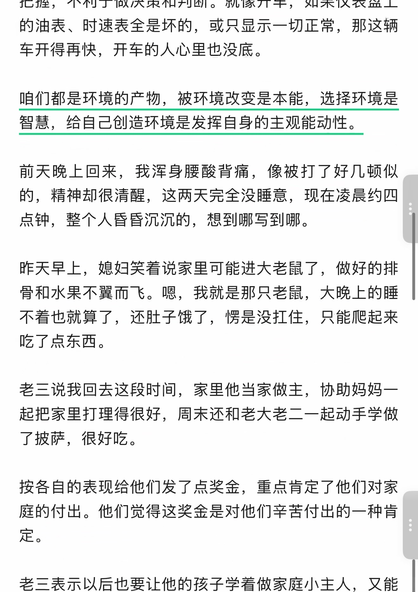
查看本页自动识别文字（OCR待核对）
以下为未经逐字核对的自动识别结果，请以上方原图为准。
把握，不利于做决策和判断。就像开车，如果仪表盘上
的油表、时速表全是坏的，或只显示一切正常，那这辆
车开得再快，开车的人心里也没底。
咱们都是环境的产物，被环境改变是本能，选择环境是
智慧，给自己创造环境是发挥自身的主观能动性。
前天晚上回来，我浑身腰酸背痛，像被打了好几顿似
的，精神却很清醒，这两天完全没睡意，现在凌晨约四
点钟，整个人昏昏沉沉的，想到哪写到哪。
昨天早上，媳妇笑着说家里可能进大老鼠了，做好的排
骨和水果不翼而飞。嗯，我就是那只老鼠，大晚上的睡
不着也就算了，还肚子饿了，愣是没扛住，只能爬起来
吃了点东西。
老三说我回去这段时间，家里他当家做主，协助妈妈一
起把家里打理得很好，周末还和老大老二一起动手学做
了披萨，很好吃。
按各自的表现给他们发了点奖金，重点肯定了他们对家
庭的付出。他们觉得这奖金是对他们辛苦付出的一种肯
定。
老三表示以后也要让他的孩子学着做家庭小主人，又能
第 7 页 · 原始截图
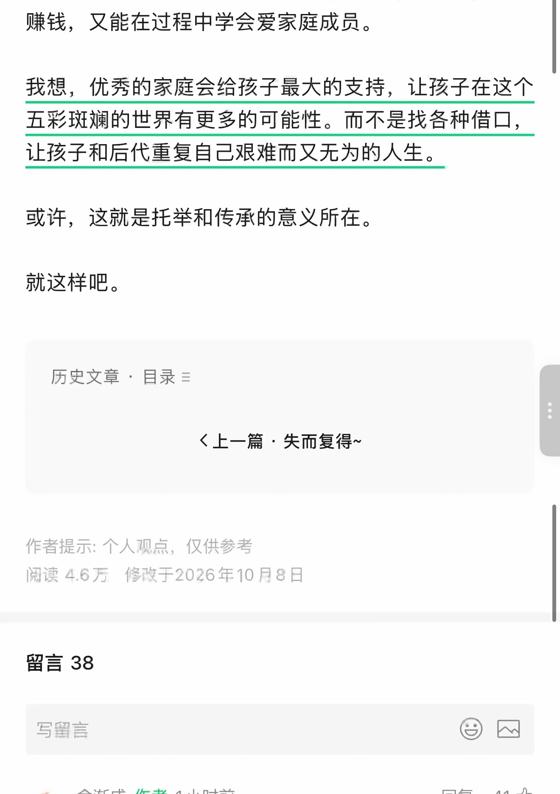
查看本页自动识别文字（OCR待核对）
以下为未经逐字核对的自动识别结果，请以上方原图为准。
赚钱，又能在过程中学会爱家庭成员。
我想，优秀的家庭会给孩子最大的支持，让孩子在这个
五彩斑斓的世界有更多的可能性。而不是找各种借口，
让孩子和后代重复自己艰难而又无为的人生。
或许，这就是托举和传承的意义所在。
就这样吧。
历史文章 · 目录 ≡
〈上一篇 · 失而复得~
作者提示：个人观点，仅供参考
阅读 4.6万 修改于2026年10月8日
留言 38
写留言
第 8 页 · 原始截图
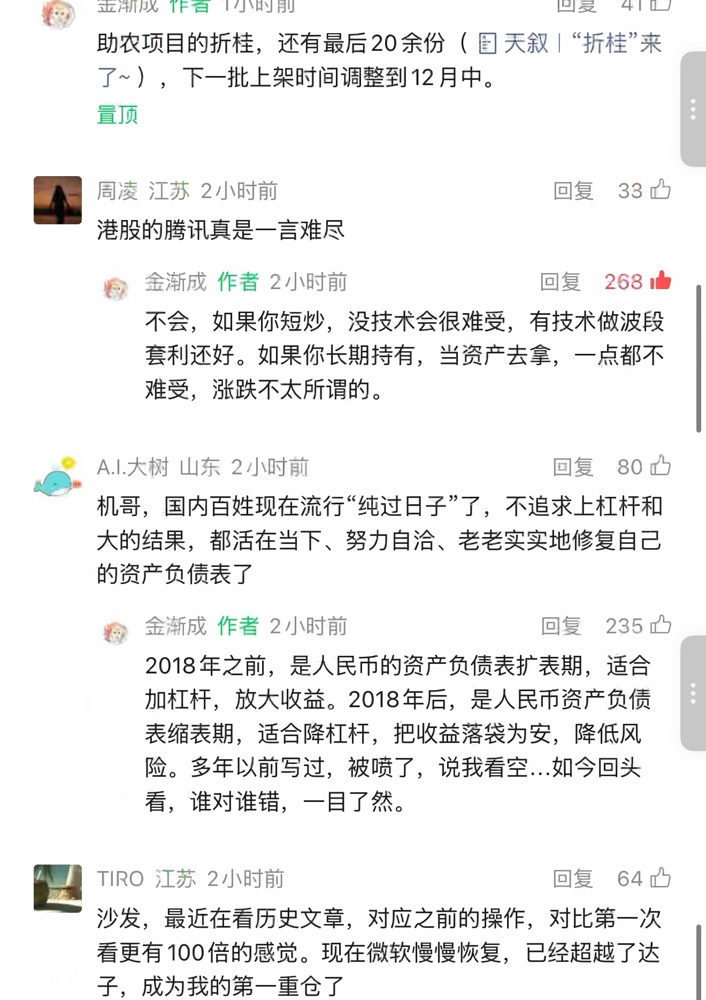
查看本页自动识别文字（OCR待核对）
以下为未经逐字核对的自动识别结果，请以上方原图为准。
金渐成 作者 1小时前 回复 41 👍
助农项目的折桂，还有最后20余份（📄 天叙｜“折桂”来
了~），下一批上架时间调整到12月中。
置顶
周凌 江苏 2小时前 回复 33 👍
港股的腾讯真是一言难尽
金渐成 作者 2小时前 回复 268 👍
不会，如果你短炒，没技术会很难受，有技术做波段
套利还好。如果你长期持有，当资产去拿，一点都不
难受，涨跌不太所谓的。
A.I.大树 山东 2小时前 回复 80 👍
机哥，国内百姓现在流行“纯过日子”了，不追求上杠杆和
大的结果，都活在当下、努力自治、老老实实地修复自己
的资产负债表了
金渐成 作者 2小时前 回复 235 👍
2018年之前，是人民币的资产负债表扩表期，适合
加杠杆，放大收益。2018年后，是人民币资产负债
表缩表期，适合降杠杆，把收益落袋为安，降低风
险。多年以前写过，被喷了，说我看空...如今回头
看，谁对谁错，一目了然。
TIRO 江苏 2小时前 回复 64 👍
沙发，最近在看历史文章，对应之前的操作，对比第一次
看更有100倍的感觉。现在微软慢慢恢复，已经超越了达
子，成为我的第一重仓了
第 9 页 · 原始截图
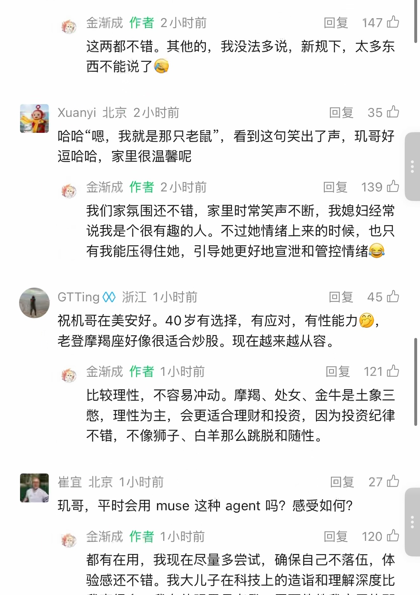
查看本页自动识别文字（OCR待核对）
以下为未经逐字核对的自动识别结果，请以上方原图为准。
金渐成 作者 2小时前 回复 147 👍
这两都不错。其他的，我没法多说，新规下，太多东
西不能说了[捂脸]
Xuanyi 北京 2小时前 回复 35 👍
哈哈“嗯，我就是那只老鼠”，看到这句笑出了声，玑哥好
逗哈哈，家里很温馨呢
金渐成 作者 2小时前 回复 139 👍
我们家氛围还不错，家里时常笑声不断，我媳妇经常
说我是个很有趣的人。不过她情绪上来的时候，也只
有我能压得住她，引导她更好地宣泄和管控情绪😂
GTTing 浙江 1小时前 回复 45 👍
祝机哥在美安好。40岁有选择，有应对，有性能力🤭，
老登摩羯座好像很适合炒股。现在越来越从容。
金渐成 作者 1小时前 回复 121 👍
比较理性，不容易冲动。摩羯、处女、金牛是土象三
憋，理性为主，会更适合理财和投资，因为投资纪律
不错，不像狮子、白羊那么跳脱和随性。
崔宜 北京 1小时前 回复 27 👍
玑哥，平时会用 muse 这种 agent 吗？感受如何？
金渐成 作者 1小时前 回复 120 👍
都有在用，我现在尽量多尝试，确保自己不落伍，体
验感还不错。我大儿子在科技上的造诣和理解深度比
第 10 页 · 原始截图
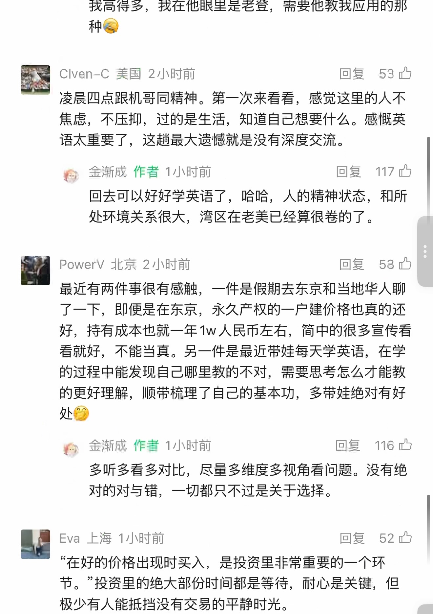
查看本页自动识别文字（OCR待核对）
以下为未经逐字核对的自动识别结果，请以上方原图为准。
我高得多，我在他眼里是老登，需要他教我应用的那
种[捂脸]
Clven–C 美国 2小时前 回复 53 👍
凌晨四点跟机哥同精神。第一次来看看，感觉这里的人不
焦虑，不压抑，过的是生活，知道自己想要什么。感慨英
语太重要了，这趟最大遗憾就是没有深度交流。
金渐成 作者 1小时前 回复 117 👍
回去可以好好学英语了，哈哈，人的精神状态，和所
处环境关系很大，湾区在老美已经算很卷的了。
PowerV 北京 2小时前 回复 53 👍
最近有两件事很有感触，一件是假期去东京和当地华人聊
了一下，即便是在东京，永久产权的一户建价格也真的还
好，持有成本也就一年1w人民币左右，简中的很多宣传看
看就好，不能当真。另一件是最近带娃每天学英语，在学
的过程中能发现自己哪里教的不对，需要思考怎么才能教
的更好理解，顺带梳理了自己的基本功，多带娃绝对有好
处🤭
金渐成 作者 1小时前 回复 116 👍
多听多看多对比，尽量多维度多视角看问题。没有绝
对的对与错，一切都只不过是关于选择。
Eva 上海 1小时前 回复 52 👍
“在好的价格出现时买入，是投资里非常重要的一个环
节。”投资里的绝大部分时间都是等待，耐心是关键，但
极少有人能抵挡没有交易的平静时光。
第 11 页 · 原始截图
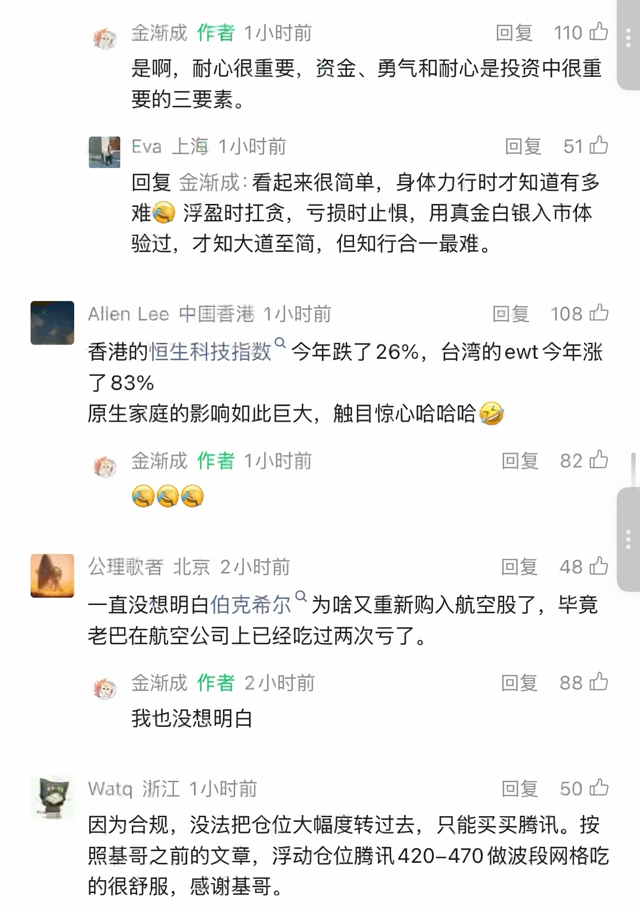
查看本页自动识别文字（OCR待核对）
以下为未经逐字核对的自动识别结果，请以上方原图为准。
金渐成 作者 1小时前 回复 110
是啊，耐心很重要，资金、勇气和耐心是投资中很重要的三要素。
Eva 上海 1小时前 回复 51
回复 金渐成：看起来很简单，身体力行时才知道有多难😂 浮盈时扛贪，亏损时止惧，用真金白银入市体验过，才知大道至简，但知行合一最难。
Allen Lee 中国香港 1小时前 回复 108
香港的恒生科技指数 今年跌了26%，台湾的ewt今年涨了83%
原生家庭的影响如此巨大，触目惊心哈哈哈🤣
金渐成 作者 1小时前 回复 82
😂😂😂
公理歌者 北京 2小时前 回复 48
一直没想明白伯克希尔 为啥又重新购入航空股了，毕竟老巴在航空公司上已经吃过两次亏了。
金渐成 作者 2小时前 回复 88
我也没想明白
Watq 浙江 1小时前 回复 50
因为合规，没法把仓位大幅度转过去，只能买买腾讯。按照基哥之前的文章，浮动仓位腾讯420-470做波段网格吃的很舒服，感谢基哥。
第 12 页 · 原始截图
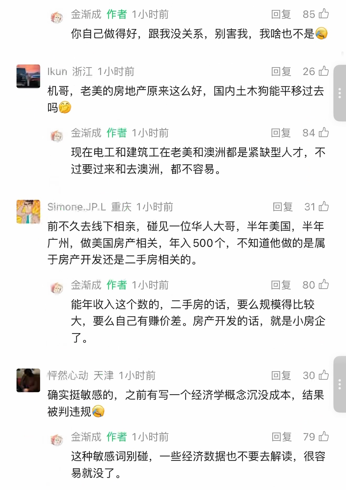
查看本页自动识别文字（OCR待核对）
以下为未经逐字核对的自动识别结果，请以上方原图为准。
金渐成 作者 1小时前 回复 85
你自己做得好，跟我没关系，别害我，我啥也不是😂
Ikun 浙江 1小时前 回复 26
机哥，老美的房地产原来这么好，国内土木狗能平移过去吗🤭
金渐成 作者 1小时前 回复 84
现在电工和建筑工在老美和澳洲都是紧缺型人才，不过要过来和去澳洲，都不容易。
Simone.JP.L 重庆 1小时前 回复 31
前不久去线下相亲，碰见一位华人大哥，半年美国，半年广州，做美国房产相关，年入500个，不知道他做的是属于房产开发还是二手房相关的。
金渐成 作者 1小时前 回复 80
能年收入这个数的，二手房的话，要么规模得比较大，要么自己有赚价差。房产开发的话，就是小房企了。
怦然心动 天津 1小时前 回复 30
确实挺敏感的，之前有写一个经济学概念沉没成本，结果被判违规😂
金渐成 作者 1小时前 回复 79
这种敏感词别碰，一些经济数据也不要去解读，很容易就没了。
第 13 页 · 原始截图
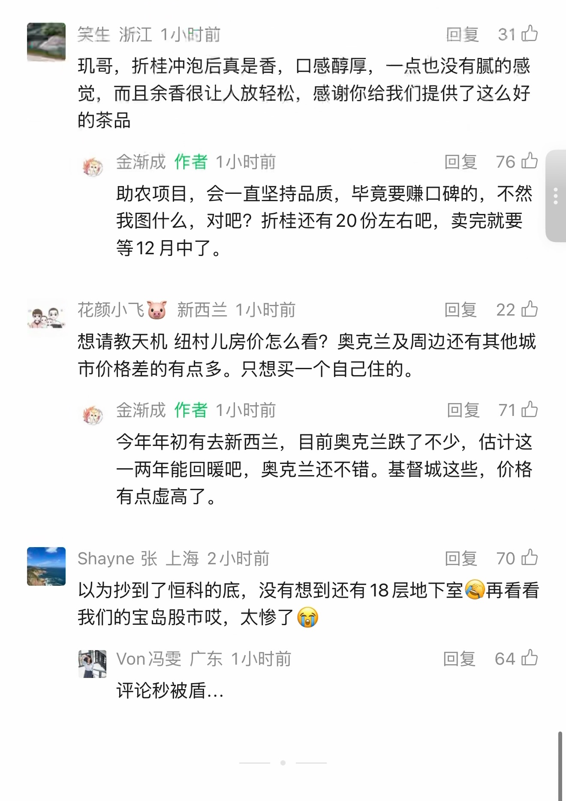
查看本页自动识别文字（OCR待核对）
以下为未经逐字核对的自动识别结果，请以上方原图为准。
笑生 浙江 1小时前 回复 31
玑哥，折桂冲泡后真是香，口感醇厚，一点也没有腻的感觉，而且余香很让人放轻松，感谢你给我们提供了这么好的茶品
金渐成 作者 1小时前 回复 76
助农项目，会一直坚持品质，毕竟要赚口碑的，不然我图什么，对吧？折桂还有20份左右吧，卖完就要等12月中了。
花颜小飞🐷 新西兰 1小时前 回复 22
想请教天机 纽村儿房价怎么看？奥克兰及周边还有其他城市价格差的有点多。只想买一个自己住的。
金渐成 作者 1小时前 回复 71
今年年初有去新西兰，目前奥克兰跌了不少，估计这一两年能回暖吧，奥克兰还不错。基督城这些，价格有点虚高了。
Shayne 张 上海 2小时前 回复 70
以为抄到了恒科的底，没有想到还有18层地下室😂再看看我们的宝岛股市哎，太惨了😭
Von冯雯 广东 1小时前 回复 64
评论秒被盾...
第 14 页 · 原始截图
查看本页自动识别文字（OCR待核对）
以下为未经逐字核对的自动识别结果，请以上方原图为准。
金渐成
1952 1252 351 38
按日期浏览全部来源（同日按条目标识排序）
回到页首 ↑